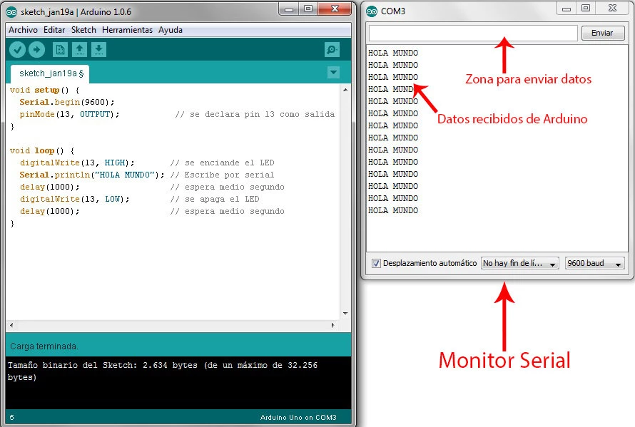
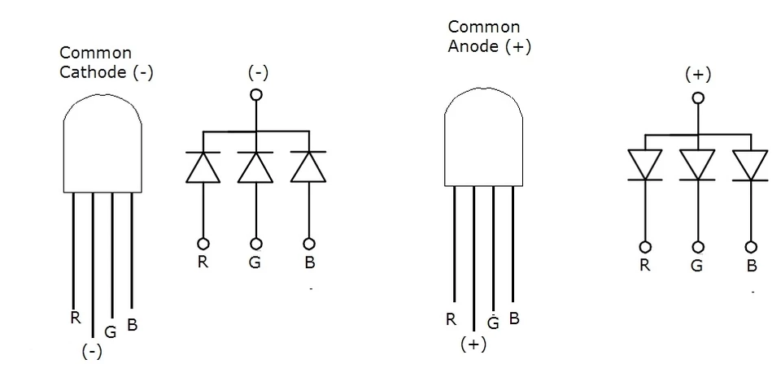
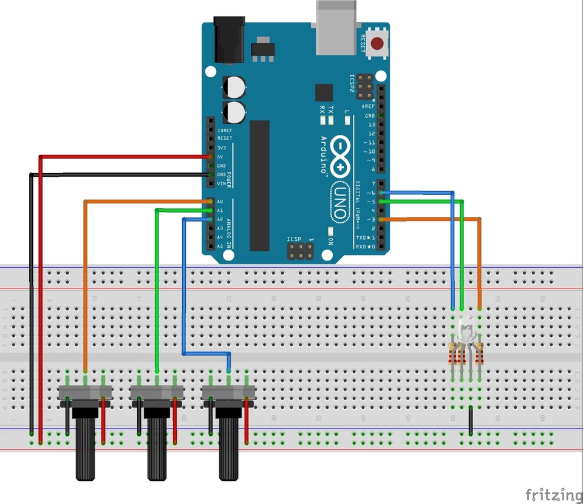
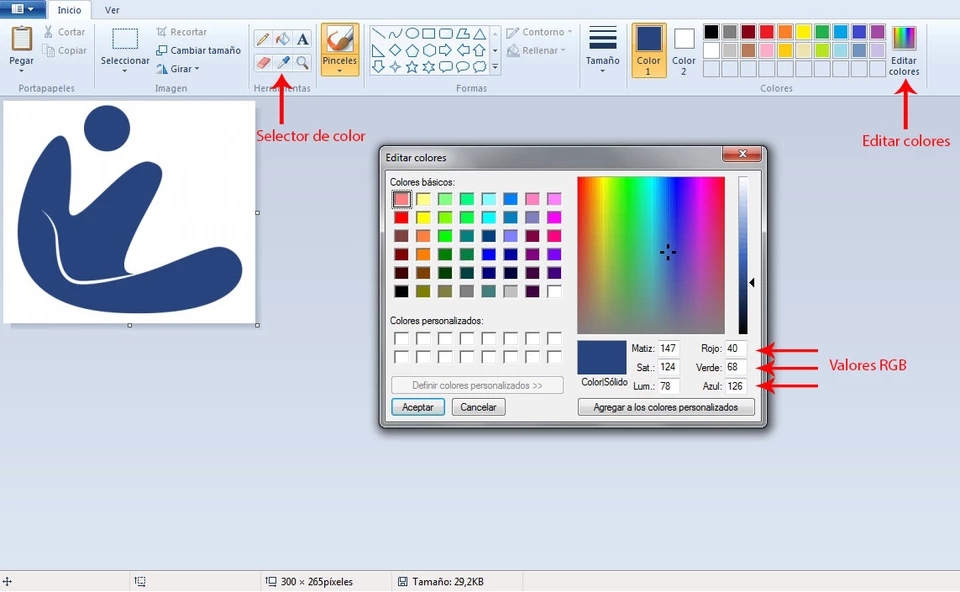
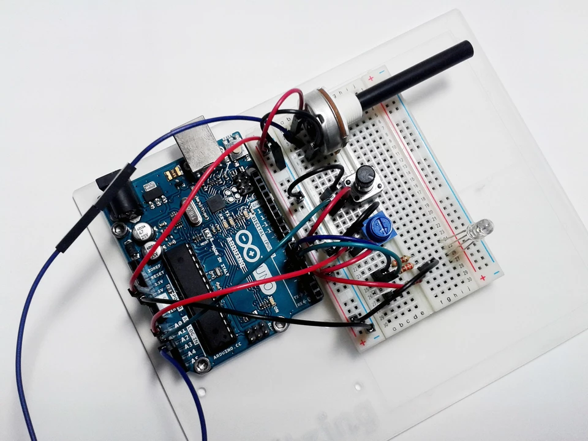

1.- ¿Qué es la comunicación serie?
Antes de comenzar, aclararemos que no nos adentraremos mucho en la definición teórica de la comunicación serie ni en sus especificaciones técnicas. Existe en Internet una gran cantidad de información muy detallada al respecto y para nuestro cometido, que es aprender a manejar Arduino y poder usarlo para nuestros propios proyectos, no nos interesa complicarnos. Nuestra intención es hacer accesible, fácil y divertido el mundo Arduino. Una vez comentado esto, definiremos la comunicación serie como una “interfaz de comunicación de datos digitales que nos permite establecer transferencia de información entre varios dispositivos”. Esto nos va a permitir interactuar con nuestro Arduino, recibiendo información y enviándosela nosotros cuando lo necesitemos. Otra cosa que nos será muy útil de esta comunicación, es que podremos darle las órdenes, previamente programadas, que queramos.
2.- ¿Dónde tenemos que dirigirnos para comunicarnos en serie con Arduino?
Para poder establecer esta comunicación usaremos el monitor serial que tenemos en el IDE. Lo encontraremos pulsando el botón, con el mismo nombre, que tenemos arriba a la derecha.

Ilustración 1 Botón de Monitor Serial
Una vez que lo pulsemos, se abrirá el monitor en el que podremos recibir información de Arduino y escribirle nosotros, tanto información que nos solicite como órdenes.

Ilustración 2 Monitor Serial
3.- Conexiones serie en Arduino
En la mayoría de Arduinos podemos encontrar 2 tipos de conexión serie para las comunicaciones. Primero, tendremos los pines de transmisión serie, que en Arduino UNO son los pines 0 (RX) para recibir datos y 1 (TX) para transmitirlos. Con ellos podremos, por ejemplo, conectar 2 Arduinos entre sí, conectándolos de manera cruzada, para que trabajen en paralelo o conectar un Arduino con otro dispositivo que también se comunique con este protocolo. Por razones obvias no podremos usar estos pines como salidas digitales mientras los usemos como conexión serial. En segundo lugar, tenemos los puertos USB (Universal Serial Bus) propios de las placas Arduino. Estos puertos, al trabajar con protocolo serial, los podemos usar para conectarnos al PC directamente y facilitarnos así el conexionado de Arduino con éste.
4.- Ejemplo: Ordenar a Arduino que encienda un Led
Para entender mejor todo lo explicado, vamos a realizar un ejemplito muy sencillo pero que nos sirve para darnos cuenta de lo útil y potente que es esta característica de Arduino. Comenzaremos realizando una simplificación del esquema de montaje que utilizamos en el post 3 para el semáforo, utilizando los mismos elementos pero para un solo Led.

Ilustración 3 Montaje para encender Led
Una vez hemos montado el circuito, nos dirigimos al IDE y escribimos el siguiente código, lo enviamos a nuestro Arduino y una vez terminado el proceso haremos click en el botón del monitor serial.
/********************************/
/* Ordenar Parpadeos de un Led */
/********************************/
/*** Fernando Martinez Mendoza ***/
//** Definiciones **//
int parpadeos;
int led = 2;
//** Programa **//
void setup(){
Serial.begin(9600); // Inicia la comunicación serial
pinMode(led, OUTPUT);
}
void loop(){
if (Serial.available()>0){ // Comprueba si el serial está disponible
parpadeos = Serial.read()-48; // leemos el número de parpadeos
if (parpadeos >= 1 && parpadeos <= 9) // Si el valor introducido está entre 1 y 9
{
Serial.print("Se van a dar ");
Serial.print(parpadeos);
Serial.println(" parpadeos");
delay(1500);
for(int i=0;i<parpadeos;i++){ // Realiza los parpadeos
digitalWrite(led, HIGH);
delay(100);
digitalWrite(led, LOW);
delay(200);
}
}
else { // Si introducimos un valor erroneo
Serial.println("El dato introducido es incorrecto");
}
}
}
Este programa lo que hace es que nuestro Led parpadee el número de veces que le digamos. Para ello introduciremos valores, entre 1 y 9, por el monitor serial y pulsamos enter. Para realizar el código, en primer lugar, hemos declarado las variables que vamos a usar, como en anteriores ejemplos. En la zona de setup hemos iniciado la comunicación serial con el comando “ Serial.begin(9600) ” para que Arduino sepa que nos comunicaremos con él a la velocidad de 9600 bits/seg (la velocidad es variable siempre que se establezca la misma en el código y en el receptor de la señal). Esto es necesario ponerlo siempre que vayamos a usar el monitor serial, ya que sin esta línea Arduino no se comunicará por serial. También hemos configurado nuestro pin del Led como salida. Usaremos el pin 2 . En el cuerpo de la función loop, comenzamos con la función “ if (Serial.available()>0) ” que comprueba si hemos enviado datos por serial para que, en nuestro caso, solo nos devuelva datos cuando los pedimos. Una vez enviado el número, con la expresión “ parpadeos = Serial.read()-48 ” almacenaremos el valor que hemos enviado en la variable “ parpadeos ”. Como habréis observado, al valor que lee del serial le restamos 48. Esto es debido a que Arduino lee los caracteres en código ASCII, el cual podéis ver aquí , y en este código el número cero equivale al valor 48. De esta forma transformamos los números de ASCII a decimales. Continuaremos con “ if (parpadeos >= 1 && parpadeos <= 9) ” imponiendo que el programa solo funcione si introducimos un número mayor o igual 1 y menor o igual 9, en caso contrario nos devolverá el mensaje “ El dato introducido es incorrecto ”. Mediante la función “ Serial.print() ” Arduino nos imprimirá en el monitor serial lo que pongamos dentro del paréntesis. Ya sea una frase, que habremos de introducir entre comillas Serial.print(“frase”) , o una variable, para lo que pondremos directamente su nombre sin comillas Serial.print(variable) . Escrito así nos irá imprimiendo todo en la misma línea, pero si escribimos “ Serial.print ln () ” lo que haremos será que, tras esa impresión, la siguiente se empezará a escribir en la línea de abajo. Usaremos esta función para que Arduino se comunique con nosotros. Finalmente definiremos un bucle for. En nuestro caso “ for (int i=0;i<parpadeos;i++) ”, para que iniciando el valor de “ i ” en 0, si “ i ” es menor que el valor de parpadeos introducido, encenderá y apagará el Led una vez e incrementará el valor de “ i ” en 1 cada vez que pase por el bucle. De esta forma conseguimos que el Led parpadee las veces que le hemos ordenado. Divertido ¿verdad?.
{kind=link}
5.- Ejemplo: Reconocimiento de valores RGB por puerto serie
En el siguiente ejemplo, utilizaremos la comunicación serial para que Arduino nos dé información, que necesitamos, de nuestro circuito. Le pediremos que nos dé el valor que tienen 3 potenciómetros conectados a un Led RGB para saber el color exacto que está dando. Éste es un ejemplo bastante usado en distintos cursos para enseñar cómo funciona la comunicación serial en Arduino, pero nos parece útil y divertido realizarlo con vosotros. Con este circuito, controlaremos qué cantidad de rojo, verde y azul dará nuestro Led y además, gracias a la comunicación serial, Arduino nos dirá que color exacto está dando y podremos usar estos datos con otros programas o decirle nosotros al sistema que dé un color exacto que queremos. Antes de comenzar, explicaremos que es un Led RGB . Es un Led que dentro lleva 3 colores independientes que mezclan su intensidad para proporcionar casi toda la gama de colores. Existen de dos tipos, de cátodo común y de ánodo común. Esto solo quiere decir que los 3 Leds internos que lleva el RGB comparten una de las conexiones, ya sea el cátodo que se conecta a tierra o el ánodo que se conecta a la alimentación. Es fácil identificar cual es la conexión compartida, ya que estos Leds tienen 4 filamentos y el más largo es el común. Los otros 3 filamentos son los que controlan cada color. Da igual el tipo que usemos, siempre que los conectemos correctamente.

Ilustración 4 Conexiones de Led RGB (arduino utfsm)
Para realizar este ejemplo necesitaremos los siguientes elementos: • 1 x Arduino UNO R3 • 1 X Protoboard • 1 x led RGB (de cátodo común) • 3 x Resistencia de 220Ω (puede valer de 330Ω) • 3 x Potenciómetros lineales de 10kΩ • Cables para conectar todo El circuito que debemos montar es el siguiente:
 Ilustración 5 Montaje de control de Led RGB
Hay que resaltar, que conectaremos cada ánodo a pines digitales PWM del Arduino para controlar la intensidad que enviamos a cada uno. Nosotros usaremos los pines digitales 3, 5 y 6 , y los analógicos 0, 1, y 2 . Finalmente nos dirigiremos al IDE, escribiremos el siguiente código y lo cargaremos a nuestro Arduino. Una vez cargado pulsaremos en el botón de monitor serial.
/**********************************/
/* Control de Led RGB con Serial */
/**********************************/
/*** Fernando Martinez Mendoza ***/
//** Definiciones **//
const int ledRojo=3; // definimos los pines digitales para el Led RGB
const int ledVerde=5;
const int ledAzul=6;
const int potRojo=0; // definimos los pines analogicos para los potenciometros
const int potVerde=1;
const int potAzul=2;
int rojo; // definimos variables para los valores de cada potenciometro
int verde;
int azul;
//** Programa **//
void setup(){
Serial.begin(9600); // inicia la comunicación serial
pinMode(ledRojo, OUTPUT); // configuramos los pines digitales como salida
pinMode(ledVerde, OUTPUT);
pinMode(ledAzul, OUTPUT);
}
void loop(){
rojo=analogRead(potRojo) / 4; // leemos el valor de cada potenciómetro
verde=analogRead(potVerde) / 4; // y lo almacenamos
azul=analogRead(potAzul) / 4;
analogWrite(ledRojo,rojo);
analogWrite(ledVerde,verde);
analogWrite(ledAzul,azul);
Serial.print("ROJO: ");
Serial.print(rojo); // si fuese ánodo común sería 255-rojo
Serial.print(" / ");
Serial.print("VERDE: ");
Serial.print(verde); // si fuese ánodo común sería 255-verde
Serial.print(" / ");
Serial.print("AZUL: ");
Serial.println(azul); // si fuese ánodo común sería 255-azul
delay(300);
}
Si prestamos atención al código, vemos que no tenemos funciones que no conozcamos. Solo destacar que, como la función analogRead lee valores entre 0-1023 y analogWrite los escribe entre 0-255, para transformar los valores de uno a otro dividiremos el valor leído por analogRead entre 4 para obtener una relación aproximada y suficientemente buena. El resto del programa, con lo aprendido en los post anteriores, se entiende perfectamente. Una vez que tenemos todo listo, podemos ver cómo, mientras movemos los potenciómetros, el Led RGB va creando distintos colores y en el monitor serial nos aparecen los valores de intensidad que se están utilizando para conseguirlos. Con estos valores podemos dirigirnos a cualquier programa de edición gráfica y utilizar ese color exacto, o viceversa. Probaremos a conseguir el color del logo de OpenWebinars.net . Primero, abrimos el logo con Paint y haremos clic en la herramienta “Selector de color”. Picaremos en el color del logo y después pulsaremos en “Editar colores”. En la ventana emergente ya podremos ver los valores RGB de nuestro color.
 Ilustración 6 Selección de valores RGB de una imagen usando Paint
Ahora, si metemos esos valores en Arduino utilizando los potenciómetros, nuestro Led RGB brillará con el color que buscábamos. Podemos jugar con los colores y usarlos como más nos diviertan.
 Ilustración 7 Montaje de control Led RGB